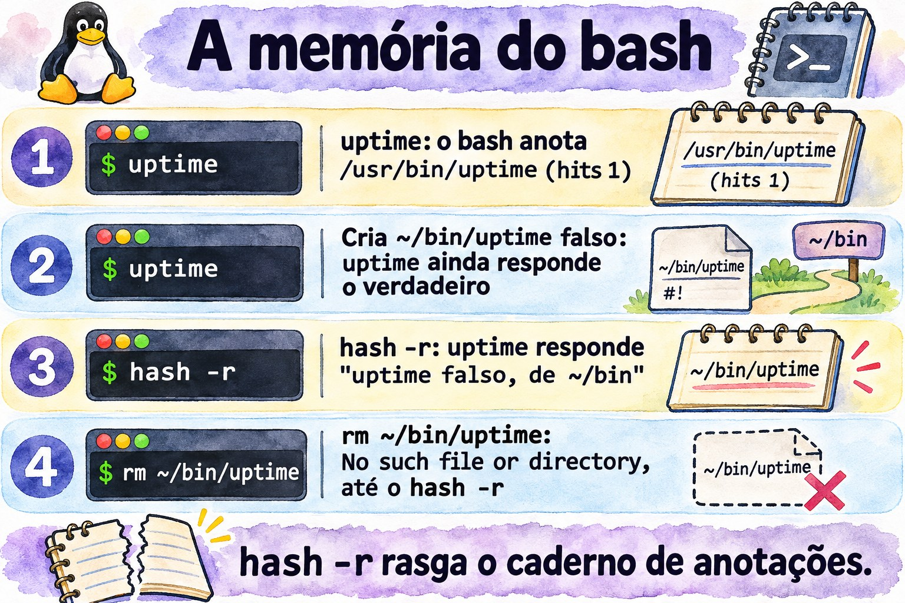

Aula 1.2 · O shell e a ajuda
Você aprende a ler qualquer comando, descobre como o bash decide o que executar e passa a achar respostas dentro do próprio sistema, sem internet, como num servidor isolado.
| Ficha | Aula 1.2 |
|---|---|
| Módulo | M1 · Linha de comando, aula 2 de 10 |
| Quando | Semana 1 |
| Ao final você consegue | Decompor um comando em nome, opções e argumentos; explicar como o bash decide o que executar; diagnosticar um PATH quebrado; achar respostas com man, apropos, info, --help e /usr/share/doc, sem internet; usar histórico e atalhos sem pensar |
| Pré-requisitos | Aula 1.1 |
| Tempo | Cerca de 2h30 |
| Snapshots | m1a2-inicio e m1a2-fim nas duas VMs |
1 · Aquecimento
Três perguntas, de cabeça, antes de ler qualquer coisa. Escreva as respostas; o Gabarito confere no fim.
- Na rocky-lab,
lllista os arquivos em formato longo. Na debian-lab, respondebash: ll: command not found. Existe um programa chamadoll? - Você está num servidor sem internet. Precisa lembrar quais campos tem cada linha do
/etc/passwd. Onde você procura? - Na debian-lab,
which cdnão responde nada, mascd /etcfunciona. Onde está o programacd?
2 · Por que importa
Sexta à noite, servidor de um cliente. Você acrescenta uma linha ao .bashrc para pôr um diretório novo no PATH, erra um caractere, fecha a sessão e entra de novo. Agora ls, vi e até sudo respondem command not found. Parece que o sistema foi apagado. Se aquela era a sua única sessão aberta, o resto da noite vai para o console remoto, ou para uma ida até o cliente.
Com esta aula, você reconhece o problema em cinco segundos: echo e cd ainda funcionam, então o bash está vivo e só perdeu o PATH. Você conserta com o caminho completo, como /usr/bin/vi, e leva um hábito que evita o susto: nunca feche a sessão que funciona antes de testar uma nova.
A segunda metade da aula é sobre achar respostas sem internet. Num servidor isolado ou numa emergência, nem sempre há navegador; a ajuda está dentro do sistema, no man, no info e em /usr/share/doc. No trabalho vale o mesmo, por outro motivo: o manual instalado no servidor descreve exatamente a versão que está nele. A resposta do fórum foi escrita para outra distribuição, outra versão, às vezes outra década.
3 · Modelo mental
O bash é uma recepcionista com uma lista fixa de perguntas.
Quando você diz um nome, como ls, ela não sai procurando ao acaso. Segue sempre a mesma lista, na mesma ordem:
- É um apelido? Se
llé apelido dels -l, ela troca o nome e continua a lista com o nome verdadeiro. Isso é o alias. - É uma palavra da língua da casa, como
ifoufor? É uma palavra reservada. - É alguém que foi apresentado nesta sessão, com nome e tarefa? É uma função.
- É alguém da própria recepção? Então ela resolve sem sair do balcão: é um builtin.
- Já chamei esse nome hoje? Então vai direto à sala que anotou: é a tabela hash.
- Se não, procura sala por sala, na ordem da lista do PATH.
Quem responde primeiro é chamado, e a busca para ali. Se ninguém responde, ela diz que não conhece ninguém com esse nome: command not found.
Dessa lista saem três consequências que você vai usar a carreira toda:
command not foundnão quer dizer que o programa não está instalado. Quer dizer que ele não está em nenhuma sala da lista. Ele pode estar em/usr/sbin, fora do seu PATH, ou o PATH pode estar quebrado.- O primeiro que aparece vence. Um
lsfalso em~/binganha do verdadeiro em/usr/bin, porque~/binvem antes na lista. É por isso que o PATH do root nunca inclui o diretório atual. - A anotação pode ficar velha. Se o programa muda de sala, a recepcionista continua indo à sala antiga até alguém mandá-la esquecer, com
hash -r.

Leia o diagrama de cima para baixo: cada etapa só é consultada se as anteriores não acharam nada. Repare na última caixa. Com o PATH quebrado, as etapas 1 a 4 ainda respondem, porque não dependem de arquivo em disco. É essa pista que transforma o susto de sexta à noite num diagnóstico de cinco segundos: se echo responde e ls não, o problema é o PATH.
Ponte Windows. O PowerShell tem a mesma recepcionista. Get-Command ls responde que ls é um alias de Get-ChildItem, e a ordem de busca é parecida: alias, função, cmdlet e, por último, os programas no $env:Path. Duas diferenças pegam quem vem do Windows. O separador do PATH no Linux é :, não ;. E o bash nunca procura no diretório atual: no cmd.exe, um script.bat da pasta atual roda direto; no Linux, você digita ./script.sh.
4 · Conceito em camadas
Essencial
| Termo | O que é | Exemplo |
|---|---|---|
| Shell | O programa que lê o que você digita e manda executar | bash, o padrão no Rocky e no Debian |
| Comando externo | Um programa em disco, achado pelo PATH | /usr/bin/ls |
| Builtin | Comando embutido no próprio bash, sem arquivo em disco | cd, echo, type, history |
| Alias | Apelido que troca uma palavra por outra antes de executar | ll vira ls -l --color=auto no Rocky |
| PATH | A lista de diretórios onde o bash procura comandos externos, separados por : | /usr/local/bin:/usr/bin |
| Tabela hash | A memória do bash: onde ele já achou cada comando nesta sessão | hash |
type | Diz o que uma palavra é para o bash: alias, builtin, arquivo | type -a ls |
--help | Resumo das opções, impresso pelo próprio comando | ls --help |
man | O manual completo, dividido em seções | man 5 passwd |
apropos ou man -k | Busca uma palavra nos títulos e resumos do manual | man -k password |
mandb | Monta o índice que o apropos consulta | sudo mandb |
info | Manual em capítulos, mais completo para as ferramentas GNU | info coreutils |
/usr/share/doc | Documentação extra dos pacotes: README, exemplos, mudanças | ls /usr/share/doc/sudo |
history | Os comandos que você já digitou, numerados | history 20 |
Anatomia de um comando. Todo comando que você vai ler na vida tem as mesmas peças:
ls -lh --sort=time /var/log
│ │ │ └─ argumento: sobre o que o comando age
│ │ └─ opção longa: palavra inteira, dois hífens, pode levar valor
│ └─ opções curtas juntas: -l e -h, um hífen só
└─ nome: o que o bash vai procurar, na ordem do diagramaAs seções do manual que importam.
| Seção | Conteúdo | Exemplo |
|---|---|---|
| 1 | Comandos de qualquer usuário | man 1 passwd: o comando que troca a senha |
| 5 | Formatos de arquivos de configuração | man 5 passwd: o arquivo /etc/passwd |
| 7 | Visões gerais e convenções | man 7 hier: o mapa dos diretórios |
| 8 | Comandos de administração, quase sempre do root | man 8 useradd |
man passwd abre a primeira seção que tiver a página, a 1. Para o arquivo, peça a seção: man 5 passwd. Na dúvida, man -f passwd lista todas.
A escada da ajuda. Quando não souber, suba um degrau por vez:
comando --help: o resumo, em segundos.man comando: o manual completo. Dentro dele,/palavrae Enter buscam,nvai para a próxima ocorrência eqsai. Procure a seção EXAMPLES.man -k palavra: quando você nem sabe o nome do comando. Se respondernothing appropriate, o índice ainda não existe; rodesudo mandb.info comando: o manual em capítulos, mais completo para as ferramentas GNU, comolsecp./usr/share/doc/pacote: README, exemplos de configuração e notas da distribuição.
Para builtins o caminho é outro: help cd.

Ponte Windows
| No Windows | No Linux |
|---|---|
Get-Command ls | type ls |
where.exe notepad | command -v ls ou which ls |
Get-Help comando -Full | man comando |
comando /? ou -? | comando --help |
$env:Path, separado por ; | $PATH, separado por : |
Get-History, F7 no cmd.exe | history, Ctrl+R |
Aprofundamento
De onde vem o PATH. Ao entrar por SSH, o bash lê /etc/profile e depois ~/.bash_profile no Rocky ou ~/.profile no Debian, que por sua vez carregam o ~/.bashrc. Cada arquivo pode mexer no PATH. No Rocky, o /etc/profile acrescenta /usr/local/sbin e /usr/sbin também para usuários comuns, e o ~/.bashrc põe ~/.local/bin e ~/bin na frente. No Debian, o PATH de um usuário comum costuma vir sem os diretórios sbin; você confere no lab.
O sudo tem o próprio PATH. A linha secure_path do /etc/sudoers define onde o sudo procura. Por isso, no mesmo terminal, useradd pode dar command not found e sudo useradd funcionar.
Mexer no PATH apaga a memória. Qualquer atribuição ao PATH esvazia a tabela hash. Quando o PATH quebra, nem os comandos que você acabou de usar escapam.
Pular etapas de propósito. \ls ignora o alias; command ls ignora alias e função; /usr/bin/ls pula a busca inteira. type -a ls mostra todos os candidatos, na ordem em que o bash os encontraria.
Não confie no which. Ele só conhece o PATH. No Debian é um script que não vê alias nem builtin; no Rocky é um alias que tenta ler os seus aliases antes. Para saber o que o bash vai executar, use type; em scripts, command -v.
O -- encerra as opções. Tudo depois dele é argumento, mesmo que comece com hífen: rm -- -arquivo apaga um arquivo chamado -arquivo.
O histórico grava tudo. Cada sessão guarda os comandos na memória e grava em ~/.bash_history ao sair. A variável HISTCONTROL decide o que fica de fora: no Rocky, ignoredups descarta repetições seguidas; no Debian, ignoreboth também descarta as linhas que começam com espaço. Por isso senha nunca vai na linha de comando: ela fica no histórico, legível.
5 · Rocky × Debian
O shell é o mesmo bash nas duas VMs, mas cada distribuição monta o ambiente do seu jeito. Estas diferenças explicam metade dos "no meu servidor funciona, no do cliente não":
| rocky-lab | debian-lab | |
|---|---|---|
| PATH de um usuário comum | Inclui /usr/local/sbin e /usr/sbin, no fim | Costuma vir sem os diretórios sbin; confira no Passo 3 |
~/bin e ~/.local/bin | Sempre no PATH, postos pelo ~/.bashrc | Só se o diretório existir no login, pelo ~/.profile |
ll | Alias criado em /etc/profile.d/colorls.sh | Não existe: a linha está comentada no ~/.bashrc |
which | Alias que lê os seus aliases e funções antes do PATH | Script em /usr/bin/which, que só olha o PATH |
HISTCONTROL | ignoredups | ignoreboth: também ignora linhas que começam com espaço |
secure_path do sudo | Inclui /usr/sbin | Inclui /usr/sbin |
| Manual das seções 5 e 7 | Pacote man-pages, fora da instalação mínima | Pacote manpages |
| Completar opções com Tab | Pacote bash-completion, fora da instalação mínima | Pacote bash-completion |
| Nome do serviço SSH | sshd | ssh; sshd também responde, como apelido |
| Documentação de um pacote | rpm -qd sudo | ls /usr/share/doc/sudo |
6 · Lab guiado
Abra três terminais: um na rocky-lab (ssh rocky-lab), um na debian-lab (ssh debian-lab) e um no nó Proxmox, para os snapshots. Em cada passo, rode, compare com a saída esperada e só então leia o Decida. As saídas são trechos; números e datas vão ser outros na sua tela.
Cada Decida é um caso real de trabalho. Escolha a letra antes de olhar a tabela: errar aqui, com a explicação ao lado, é o jeito mais barato de errar.
Passo 1 · Snapshot antes de tudo. No nó Proxmox:
qm snapshot 201 m1a2-inicio --description "Aula 1.2, antes do lab"
qm snapshot 202 m1a2-inicio --description "Aula 1.2, antes do lab"
qm listsnapshot 201Saída esperada: a árvore mostra m0a2-fim, m1a1-fim, m1a2-inicio e, por último, current.
Passo 2 · Instale a ajuda. Nas VMs mínimas, parte do manual não vem instalada. Na rocky-lab:
sudo dnf install -y man-db man-pages info bash-completion
sudo mandbNa debian-lab:
sudo apt install -y man-db manpages info bash-completion
sudo mandbO que já estiver instalado é ignorado. O mandb monta o índice que o man -k consulta, e a saída termina com a contagem de páginas processadas. Depois saia das duas VMs com exit e entre de novo, para o bash-completion carregar.
Passo 3 · Leia o seu PATH. Antes de rodar, aposte: /usr/sbin aparece no PATH da debian-lab? Nas duas VMs:
echo "$PATH" | tr ':' '\n'Na rocky-lab, um diretório por linha, nesta ordem:
/home/student/.local/bin
/home/student/bin
/usr/local/bin
/usr/bin
/usr/local/sbin
/usr/sbinNa debian-lab, algo como:
/usr/local/bin
/usr/bin
/bin
/usr/local/games
/usr/gamesAgora, na debian-lab, procure o useradd de três jeitos:
command -v useradd
ls -l /usr/sbin/useradd
sudo useradd --help | head -3Se o PATH não tem sbin, o primeiro não responde nada, o segundo mostra que o arquivo existe e o terceiro funciona, porque o sudo procura no próprio secure_path. Se o seu PATH já tiver /usr/sbin, os três respondem, e a lição continua valendo para os Debian mais antigos que você vai encontrar nos clientes.
Decida 1 · O useradd que sumiu. Cenário: num Debian de cliente, logado como usuário comum, você roda useradd --help e recebe bash: useradd: command not found. O que você faz?
- A) Reinstala o pacote com
sudo apt install --reinstall passwd. - B) Confere com
ls -l /usr/sbin/useradde roda o comando comsudo. - C) Acrescenta o diretório atual ao PATH com
PATH=$PATH:.. - D) Conclui que o Debian não tem
useradde usa oadduser.
Escolha a letra antes de olhar a tabela.
| Se você marcou | Resultado | Por quê |
|---|---|---|
| A | ❌ Errada | O programa está instalado; só não está na lista de busca. Reinstalar não muda o PATH e ainda mexe num servidor de produção sem motivo. |
| B | ✅ Certa | command not found quer dizer "fora da lista", não "não instalado". O arquivo está em /usr/sbin, e criar usuário é tarefa de root: o sudo já procura lá. |
| C | ❌ Errada | O useradd não está no diretório atual, então nada muda. E pôr . no PATH abre a porta para um programa falso com nome de comando. |
| D | ❌ Errada | O useradd existe no Debian. E o adduser também fica em /usr/sbin: daria o mesmo erro. |
Para fixar: a recepcionista só procura nas salas da lista. Quem está em outra sala continua existindo.

Passo 4 · Pergunte ao bash o que cada nome é. Nas duas VMs:
type -a ls
type ll
type cd
type if
type -a whichNa rocky-lab, algo como:
ls is aliased to `ls --color=auto'
ls is /usr/bin/ls
ll is aliased to `ls -l --color=auto'
cd is a shell builtin
if is a shell keyword
which is aliased to `(alias; declare -f) | /usr/bin/which --tty-only --read-alias --read-functions --show-tilde --show-dot'
which is /usr/bin/whichNa debian-lab, algo como:
ls is aliased to `ls --color=auto'
ls is /usr/bin/ls
ls is /bin/ls
bash: type: ll: not found
cd is a shell builtin
if is a shell keyword
which is /usr/bin/which
which is /bin/whichTrês leituras. O ll só existe onde alguém criou o alias. O which é uma coisa diferente em cada distribuição. E, se o PATH da debian-lab tem /bin, o ls aparece duas vezes: é o mesmo arquivo, porque nos Debian atuais o /bin é um atalho para /usr/bin.
Decida 2 · O script que funciona no terminal e falha no cron. Cenário: um script de backup na rocky-lab começa com #!/bin/bash e tem a linha ll /backup > /tmp/lista.txt. Rodado à mão, no terminal, funciona. Pelo cron, falha com ll: command not found. Por quê?
- A) O cron usa um PATH curto, sem
/usr/bin. - B) Aliases só existem em sessões interativas; o script precisa usar
ls -l. - C) O cron roda o script com
sh, e não combash. - D) O usuário do cron não tem permissão de leitura em
/backup.
Escolha a letra antes de olhar a tabela.
| Se você marcou | Resultado | Por quê |
|---|---|---|
| A | ❌ Errada | O PATH do cron é curto, mas inclui /usr/bin. E não existe arquivo ll em lugar nenhum: nenhum PATH acharia. |
| B | ✅ Certa | O ll é um alias criado em /etc/profile.d/colorls.sh, que só é carregado em sessões interativas. Num script, o bash nem expande aliases. Em script, escreva o comando verdadeiro. |
| C | ❌ Errada | A primeira linha, #!/bin/bash, garante o bash. E, mesmo no bash, script não expande aliases. |
| D | ❌ Errada | Falta de permissão dá Permission denied, não command not found. Leia a mensagem: ela diz qual etapa falhou. |
Para fixar: alias é conforto de quem digita. Script não digita.
Passo 5 · A memória do bash. Na rocky-lab:
hash -r
hash
uptime
hash
type uptimeSaída esperada: primeiro hash: hash table empty; depois do uptime, a tabela mostra /usr/bin/uptime com 1 na coluna hits; e o type responde uptime is hashed (/usr/bin/uptime).
Agora crie um uptime falso em ~/bin, que vem antes de /usr/bin no PATH:
mkdir -p ~/bin
printf '#!/bin/bash\necho "uptime falso, de ~/bin"\n' > ~/bin/uptime
chmod +x ~/bin/uptime
uptimePreveja antes do Enter: qual uptime responde? O verdadeiro. O bash nem olhou o PATH, porque o caminho já estava anotado. Mande-o esquecer:
hash -r
uptimeAgora responde uptime falso, de ~/bin. Por último, apague o falso sem limpar a tabela:
rm ~/bin/uptime
uptime
hash -r
uptimeO primeiro uptime responde bash: /home/student/bin/uptime: No such file or directory: o bash foi direto à sala anotada, e ela estava vazia. Depois do hash -r, volta o verdadeiro. Guarde esta mensagem: um caminho completo no erro, para um programa que você chamou só pelo nome, é sinal de anotação velha.
Decida 3 · A versão que não muda. Cenário: num servidor de cliente, você instala a versão nova de uma ferramenta de backup em /usr/local/bin. A antiga continua em /usr/bin. Na mesma sessão, a opção --version ainda mostra a antiga. O que você faz?
- A) Reinstala a versão nova, porque a instalação falhou.
- B) Roda
typecom o nome da ferramenta e, se ela aparecer comohashed, limpa comhash -r. - C) Inverte a ordem do PATH, porque
/usr/local/binvem depois de/usr/bin. - D) Reinicia o servidor para o sistema reconhecer a versão nova.
Escolha a letra antes de olhar a tabela.
| Se você marcou | Resultado | Por quê |
|---|---|---|
| A | ❌ Errada | A instalação deu certo; o bash é que não procurou de novo. Reinstalar não apaga a anotação. |
| B | ✅ Certa | O bash anotou o caminho antigo quando você usou a ferramenta pela primeira vez. hash -r apaga as anotações; a próxima busca percorre o PATH e acha /usr/local/bin primeiro. |
| C | ❌ Errada | No Rocky e no Debian, /usr/local/bin vem antes de /usr/bin, justamente para o que você instala à mão vencer o que vem do pacote. |
| D | ❌ Errada | Funcionaria por acaso, porque a sessão nova começa sem anotações. Mas derruba os serviços do cliente por algo que um comando resolve. Sair e entrar de novo no SSH já bastaria. |
Para fixar: anotação velha manda a recepcionista à sala errada. hash -r rasga o caderno.


Passo 6 · O manual e as seções. Nas duas VMs:
ls --help | head -15
man -f passwd
man 5 passwdO man -f mostra algo como:
passwd (1) - change user password
passwd (5) - the password fileNa rocky-lab pode aparecer também passwd (1ssl), do OpenSSL. Dentro do man 5 passwd, digite /shell e Enter: o cursor vai à descrição do campo do shell de login. n vai para a próxima ocorrência e q sai.
Agora um caso de trabalho: um cliente quer que um técnico reinicie um serviço sem virar root. A sintaxe está no próprio sistema:
man 5 sudoersDentro dele, digite /^EXAMPLES e Enter. A seção de exemplos tem linhas prontas para adaptar. Saia com q.
Por fim, busque sem saber o nome do comando:
man -k 'user account'Algo como:
userdel (8) - delete a user account and related files
usermod (8) - modify a user accountSe a resposta for user account: nothing appropriate, o índice não foi montado: rode sudo mandb e tente de novo.
Decida 4 · O servidor sem internet. Cenário: num servidor sem acesso à internet, um chamado pede que a conta do usuário ana expire em 31 de dezembro de 2027. Você não lembra o comando. O que você faz primeiro?
- A) Abre o
man passwde lê do começo ao fim. - B) Roda
man -k expir, acha o nome do comando e busca/expirdentro do manual dele. - C) Abre o
infoe navega até achar. - D) Testa
--helpem todo comando que começa comuser.
Escolha a letra antes de olhar a tabela.
| Se você marcou | Resultado | Por quê |
|---|---|---|
| A | ❌ Errada | O passwd cuida da validade da senha, não da expiração da conta. E ler um manual inteiro consome minutos que você não tem. |
| B | ✅ Certa | O man -k busca nos resumos de todas as páginas, e expir pega "expire", "expiry" e "expiration". Aparece o chage, e dentro do manual dele a busca leva à opção -E. Dois comandos e você está na linha certa. |
| C | ❌ Errada | O info é ótimo para as ferramentas GNU, mas não busca em todos os comandos, e os de gestão de usuários nem têm página info. |
| D | ❌ Errada | É chute com o cronômetro rodando. Pode até achar o usermod -e, mas por sorte. |
Para fixar: o man -k é o buscador de dentro do servidor. Ele só funciona depois que o mandb montou o índice.
Passo 7 · info, help e /usr/share/doc. Nas duas VMs:
info lsEspaço avança, n vai para o próximo nó, u sobe um nível e q sai. O info do ls explica cada opção com mais detalhe que o man. Depois:
help cd
man cdNa debian-lab, o help cd explica o builtin e o man cd responde No manual entry for cd. Na rocky-lab, o man cd costuma abrir uma página geral dos builtins do bash; o help cd continua sendo o caminho curto. Por último, a documentação dos pacotes:
ls /usr/share/doc | wc -l
ls /usr/share/doc/sudoNa rocky-lab, rpm -qd sudo lista todos os arquivos de documentação do pacote, manuais incluídos.
Decida 5 · O manual que não existe. Cenário: você quer saber o que faz a opção -P do cd. Na debian-lab, man cd responde No manual entry for cd. O que você faz?
- A) Instala pacotes de manual até a página aparecer.
- B) Roda
help cd. - C) Conclui que o
cdnão tem opções. - D) Procura o arquivo
/usr/bin/cdpara ler o que ele faz.
Escolha a letra antes de olhar a tabela.
| Se você marcou | Resultado | Por quê |
|---|---|---|
| A | ❌ Errada | Existe um pacote com uma página cd do padrão POSIX, mas ela descreve o cd genérico, não o do bash. A documentação certa já está instalada. |
| B | ✅ Certa | O cd é um builtin: vive dentro do bash, e quem o documenta é o próprio bash, com o help. Lá estão o -P e o -L. |
| C | ❌ Errada | Falta de manual não é falta de opção. O cd tem -L, -P e outras. |
| D | ❌ Errada | Na debian-lab não existe /usr/bin/cd. O cd precisa ser builtin: um programa externo mudaria o diretório dele próprio e terminaria, e o seu shell continuaria onde estava. |
Para fixar: builtin se pergunta ao bash, com help.
Passo 8 · Histórico e atalhos. Na debian-lab:
ls /root
sudo !!O primeiro dá Permission denied. O !! repete o último comando; o bash mostra sudo ls /root antes de executar. Depois:
ls -ld /var/log
cd !$
pwd!$ é o último argumento do comando anterior: o cd vai para /var/log. Agora três atalhos, só no teclado:
- Ctrl+R e digite
uptime: o bash acha o último comando com essa palavra. Enter executa; Esc deixa editar antes. - Digite
systemctl status sse aperte Tab duas vezes: aparecemsshd.servicena rocky-lab essh.servicena debian-lab. - Ctrl+A vai ao início da linha, Ctrl+E ao fim e Ctrl+U apaga tudo antes do cursor.
Por fim, o HISTCONTROL, nas duas VMs. A segunda linha começa com um espaço:
echo "$HISTCONTROL"
echo teste-com-espaco
history 3Na debian-lab, o comando com espaço não aparece no histórico. Na rocky-lab, aparece.
Decida 6 · O histórico como prova. Cenário: um servidor de cliente parou de enviar e-mails, e o cliente jura que ninguém mexeu. Você roda history com o seu usuário e não vê nada estranho. O que você conclui?
- A) Ninguém mexeu; o histórico confirma.
- B) O
historymostra só o seu usuário e pode ter sido editado; para saber quem fez o quê, você precisa dos registros do sistema. - C) Que falta rodar
sudo historypara ver o histórico de todos. - D) Que basta ler o
.bash_historydo root, que registra tudo o que acontece no servidor.
Escolha a letra antes de olhar a tabela.
| Se você marcou | Resultado | Por quê |
|---|---|---|
| A | ❌ Errada | O history mostra só os comandos do seu usuário, das sessões já gravadas. Cada técnico, e o root, tem o seu. |
| B | ✅ Certa | O histórico é pista, não prova: é por usuário, é gravado ao sair, pode ser editado e, no Debian, ignora linhas com espaço na frente. Quem fez o quê vem dos registros do sistema, como os do sudo no journal, que você aprende a ler mais adiante no curso. |
| C | ❌ Errada | O history é um builtin, e o sudo só executa programas em disco. A resposta é sudo: history: command not found: a ordem de busca de novo. |
| D | ❌ Errada | Ele guarda só o que foi digitado como root, e só das sessões encerradas. Serve de pista, mas não mostra o que outros usuários fizeram com sudo. |
Para fixar: o history é a agenda de cada um. A auditoria é o livro de registro da portaria.
O protocolo do command not found. Quatro comandos, nesta ordem, em qualquer servidor. O exemplo usa o useradd; troque pelo comando da vez:
type -a useradd
echo "$PATH" | tr ':' '\n'
ls -l /usr/sbin/useradd
sudo useradd --help | head -3O primeiro pergunta ao bash o que ele conhece. O segundo mostra onde ele procura. O terceiro diz se o arquivo existe fora da lista. O quarto mostra se o problema some com o PATH do sudo. Em menos de um minuto, você sabe se o caso é PATH, instalação ou permissão.

7 · Quebre e conserte
Agora você quebra de propósito o que mais derruba sessões de verdade: o PATH. São duas quebras. A primeira some quando a sessão termina. A segunda fica gravada no arquivo de login e volta em toda sessão nova. Faça tudo na rocky-lab: o snapshot m1a2-inicio está lá para isso.
Quebra A · só nesta sessão
Quebre. Na rocky-lab:
PATH=/tmpNenhuma mensagem. Parece que nada mudou.
Preveja. Antes de rodar cada linha abaixo, diga se ela funciona. Anote os seus palpites.
ls
echo "$PATH"
cd /var/log
type -a ls
sudo ls /root
/usr/bin/ls /tmp
/usr/bin/sudo ls /rootDescubra. Algo como:
bash: ls: command not found
/tmp
ls is aliased to `ls --color=auto'
bash: sudo: command not foundO cd não responde nada, porque deu certo. Os dois últimos funcionam: com o caminho completo, o bash não precisa procurar. O último pode pedir a sua senha, e o sudo acha o ls sozinho, pelo secure_path dele.
Repare no type -a ls. O alias continua lá, mas só troca o texto: ls vira ls --color=auto, e esse ls ainda precisa ser achado no PATH. É o diagrama da §3 ao vivo. As etapas de dentro do bash respondem: alias, builtin e o próprio echo. A etapa do PATH não acha nada.
Decida 7 · A sessão sem comandos. Cenário: numa sessão SSH num servidor de cliente, depois de colar um bloco de comandos de um tutorial, nada funciona: ls, vi e systemctl dão command not found. O echo e o cd funcionam. O que você faz primeiro?
- A) Reinicia o servidor pelo painel do hypervisor.
- B) Roda
echo "$PATH"e, se estiver errado, corrige o PATH desta sessão. - C) Reinstala o
coreutils, porque os programas sumiram. - D) Fecha a sessão e entra de novo, sem olhar nada.
Escolha a letra antes de olhar a tabela.
| Se você marcou | Resultado | Por quê |
|---|---|---|
| A | ❌ Errada | Resolveria por acaso, se a quebra fosse só da sessão. Mas derruba os serviços do cliente e apaga a pista. Se a quebra estiver num arquivo de login, volta igual depois do boot. |
| B | ✅ Certa | echo e cd vivos com todo o resto morto é a assinatura do PATH quebrado. O echo é builtin, então funciona e mostra a causa em segundos. Os programas continuam acessíveis pelo caminho completo, como /usr/bin/ls. |
| C | ❌ Errada | Os programas estão no disco; o bash é que não sabe onde procurar. E o dnf também é um programa: com o PATH quebrado, nem ele responde. |
| D | ❌ Errada | Funciona se a quebra era só da sessão, mas você ainda não sabe disso. Se o tutorial gravou a mudança no .bashrc, a sessão nova vem igual. Você trocou um diagnóstico de cinco segundos por um palpite. |
Para fixar: quando só os builtins respondem, olhe o PATH antes de qualquer outra coisa.
Conserte. Devolva o PATH do Passo 3:
PATH=/home/student/.local/bin:/home/student/bin:/usr/local/bin:/usr/bin:/usr/local/sbin:/usr/sbinOutro jeito: exit e entrar de novo. Essa quebra só existia na memória desta sessão.
Verifique.
hash
ls ~
type -a lsO hash responde hash: hash table empty. A atribuição do PATH apagou as anotações, como na §4. Depois o ls funciona e o type -a mostra o alias e /usr/bin/ls.
Quebra B · gravada no login
Esta é a do caso da sexta à noite, na §2. A regra de ouro vem antes do comando: a sessão que você tem aberta agora fica aberta até o fim. Ela é o seu paraquedas.
Quebre. Na rocky-lab, na sessão que já está aberta:
cp ~/.bashrc ~/.bashrc.bak
[ "$(hostname)" = rocky-lab ] && echo 'PATH=/tmp' >> ~/.bashrc
diff ~/.bashrc.bak ~/.bashrcO diff mostra a única diferença entre a cópia e o arquivo, algo como:
27a28
> PATH=/tmpSe o diff não mostrar nada, você não está na rocky-lab. Confira com hostname. A cópia .bak é o primeiro hábito desta quebra: antes de mexer num arquivo de login, guarde uma cópia.
Preveja. Abra um segundo terminal no Windows e rode ssh rocky-lab. O login vai funcionar? O prompt aparece? O que funciona lá dentro?
Descubra. O login funciona e o prompt aparece. O SSH não depende do seu PATH: o .bashrc só é lido pelo bash, depois que você já entrou. Lá dentro:
ls
echo "$PATH"
vi ~/.bashrc
/usr/bin/diff ~/.bashrc.bak ~/.bashrcAlgo como:
bash: ls: command not found
/tmp
bash: vi: command not found
27a28
> PATH=/tmpSem PATH, nem o editor abre. Mas o diff com caminho completo mostra exatamente a linha culpada.
Conserte. Desta vez, conserte de dentro da sessão quebrada, para treinar o caso em que não sobrou paraquedas:
/usr/bin/sed -i '/^PATH=\/tmp$/d' ~/.bashrc
/usr/bin/diff ~/.bashrc.bak ~/.bashrc
echo "$PATH"O sed -i apaga do arquivo a linha que é exatamente PATH=/tmp. O diff não mostra nada, porque os dois arquivos estão iguais de novo. Mas o echo ainda mostra /tmp. O arquivo está consertado, a sessão não: ela leu o arquivo quando começou. Saia com exit.
No paraquedas, o mesmo conserto seria só sed -i '/^PATH=\/tmp$/d' ~/.bashrc, sem caminho completo. Ou cp ~/.bashrc.bak ~/.bashrc, que devolve a cópia inteira.
Verifique. No segundo terminal, abra uma sessão nova:
ssh rocky-lab
echo "$PATH" | tr ':' '\n'
ls ~Voltou o PATH do Passo 3. Agora, e só agora, apague a cópia e feche o paraquedas:
rm ~/.bashrc.bakDecida 8 · A edição de sexta à noite. Cenário: por SSH, você acabou de editar o .bashrc do root num servidor de cliente para acrescentar um diretório ao PATH. Qual é a ordem certa para testar?
- A) Salvar, sair da sessão e entrar de novo para testar.
- B) Salvar, abrir uma segunda sessão sem fechar a primeira, testar nela e só então fechar a primeira.
- C) Salvar e rodar
source ~/.bashrcna mesma sessão. Se não der erro, está certo. - D) Salvar e reiniciar o servidor para carregar o arquivo novo.
Escolha a letra antes de olhar a tabela.
| Se você marcou | Resultado | Por quê |
|---|---|---|
| A | ❌ Errada | Se a mudança quebrou algo, você descobre do lado de fora, sem uma sessão boa para consertar. Aqui o login ainda entraria. Com um erro no sshd_config ou no firewall, nem isso. |
| B | ✅ Certa | A sessão antiga guarda o ambiente que funcionava, e é dela que você conserta se a nova vier quebrada. Só feche a antiga depois que a nova provar que está tudo certo. |
| C | ❌ Errada | Testa no lugar errado: se a linha quebra o PATH, você quebra a sua única sessão boa. E o source não reproduz um login limpo, porque o que já estava carregado continua lá e esconde erros. |
| D | ❌ Errada | O .bashrc é lido quando o shell começa, não no boot. Reiniciar não testa nada e derruba os serviços do cliente. |
Para fixar: a sessão aberta é o paraquedas. Ninguém tira o paraquedas antes de conferir o novo.
E o snapshot?
Se algo saiu do controle, volte ao início do lab. No nó Proxmox:
qm rollback 201 m1a2-inicio
qm start 201O rollback desfaz tudo desde o Passo 1, inclusive os pacotes de ajuda: refaça o Passo 2 antes de seguir.
Bônus na Debian
Repita a Quebra A na debian-lab e acrescente três testes:
PATH=/tmp
/bin/ls /tmp
/usr/bin/ls -ld /bin
/usr/bin/sudo -iO /bin/ls funciona tanto quanto o /usr/bin/ls. O segundo comando mostra o motivo, algo como lrwxrwxrwx 1 root root 7 ... /bin -> usr/bin: nos Debian atuais, /bin é um atalho para /usr/bin. O último abre um shell de root com o PATH do root, montado do zero. Confira com echo "$PATH".
Essa é a saída de emergência quando o seu PATH quebrou e você precisa consertar algo do sistema. Volte com exit e conserte a sua sessão como na Quebra A, usando o PATH que você anotou no Passo 3, ou com exit e um login novo.
A lição: um arquivo de login quebrado não tranca a porta; tranca o que você faz depois de entrar. Com caminho completo, você ainda conserta tudo. Mas a defesa de verdade é de procedimento: mudou algo que afeta o acesso, teste numa sessão nova com a antiga aberta. Vale para o .bashrc, o sshd_config, as regras de firewall e o sudoers.

8 · Armadilhas
| Sintoma | Causa | Saída |
|---|---|---|
command not found para um comando que você sabe que está instalado | O diretório dele não está no seu PATH. É o caso do /usr/sbin para usuário comum no Debian. | ls -l /usr/sbin/nome para confirmar; rode com sudo ou com o caminho completo. |
No Debian, depois de su, o useradd dá command not found | Do Debian 10 em diante, o su sem hífen vira root, mas mantém o seu PATH, sem sbin. | su -, que monta o ambiente do root do zero. Se a instalação não definiu senha de root, o su nem entra: use sudo -i. |
bash: /home/student/bin/x: No such file or directory para um comando chamado só pelo nome | Anotação velha na tabela hash: o arquivo mudou de lugar ou foi apagado. | hash -r |
| Instalou a versão nova e continua rodando a velha | Anotação velha, ou a velha está num diretório que vem antes no PATH. | type -a nome mostra todas; hash -r limpa as anotações. |
ll: command not found num servidor, e no outro funciona | Alias só existe onde alguém criou. Em script, alias não funciona em lugar nenhum. | ls -l. Para o seu conforto, crie o alias no seu ~/.bashrc; em script, escreva o comando verdadeiro. |
O which aponta um arquivo, mas o bash roda outra coisa | O which do Debian só olha o PATH e ignora alias, função e builtin. | type -a nome |
man -k responde nothing appropriate | O índice do manual não foi montado. | sudo mandb |
No manual entry for cd | O cd é builtin: quem documenta é o bash. | help cd |
No Rocky, man 5 passwd não acha a página | Instalação mínima, sem o pacote man-pages. | sudo dnf install -y man-pages |
sudo cd /var/lib/mysql dá sudo: cd: command not found | O sudo só executa programas em disco. Builtins como cd e history não existem para ele. | sudo ls /var/lib/mysql para olhar, ou sudo -i para um shell de root. |
script.sh: command not found com o script na pasta atual | O bash nunca procura no diretório atual, ao contrário do cmd.exe. | ./script.sh |
Uma senha digitada na linha de comando aparece no history | O bash grava tudo. Só o Debian ignora as linhas que começam com espaço. | Nunca passe senha na linha de comando. Se passou, trate como vazada e troque a senha. |
Mudou o .bashrc e nada mudou | O arquivo só é lido quando o shell começa. | Teste numa sessão nova, com a antiga aberta. |
Colou um tutorial e veio $: command not found | O $ do prompt do tutorial foi colado junto com o comando. | Cole só o comando, sem o $ da frente. |
9 · Quiz
Responda sem olhar a aula. As respostas comentadas estão no Gabarito, no fim.
- Em que ordem o bash procura um nome que você digitou?
type lsrespondels is hashed (/usr/bin/ls). O que isso quer dizer, e quando essa resposta engana você?- Na debian-lab, como usuário comum,
useradd --helpdácommand not found, massudo useradd --helpfunciona. Explique em duas frases. - Em que seção do manual fica o formato do
/etc/shadow? Escreva o comando que abre exatamente essa página. - Complete as lacunas: para ver todas as formas como o bash entende
ls, rode____ -a ls. Para buscar no manual pela descrição,man ___ 'user account'. Se a busca respondernothing appropriate, rodesudo _____. - Por que o
cdprecisa ser um builtin? - Você rodou
cat /var/log/securee recebeuPermission denied. Qual é o jeito mais curto de repetir o comando comsudo? - Você editou o
.bashrcde um servidor por SSH. Descreva o teste seguro em três passos. - Pergunta em inglês, como nos fóruns e na documentação: Which command displays the manual page that describes the format of the /etc/passwd file?
- A)
man passwd - B)
man 5 passwd - C)
info passwd 5 - D)
help passwd
- A)
10 · Flashcards e cola
| Frente | Verso |
|---|---|
O que command not found quer dizer? | Que o nome não está em nenhuma etapa da busca. Não quer dizer que o programa não está instalado. |
| Ordem de busca do bash | Alias, palavra reservada, função, builtin, tabela hash, PATH. Para no primeiro que acha. |
| Ver tudo o que um nome pode ser | type -a nome |
| O comando velho insiste em rodar | hash -r |
| Ver o PATH, um diretório por linha | echo "$PATH" | tr ':' '\n' |
| Seções 1, 5, 7 e 8 do manual | Comandos; formatos de arquivo; visões gerais; comandos de administração |
| Buscar no manual pela descrição | man -k palavra, igual a apropos. Se vier vazio, sudo mandb. |
Dentro do man: buscar, próxima, sair | /texto, n, q |
| Ajuda de um builtin | help cd |
| Documentação extra de um pacote | /usr/share/doc/pacote; no Rocky, rpm -qd pacote |
| Repetir o último comando com sudo | sudo !! |
| Último argumento do comando anterior | !$ |
| Buscar no histórico | Ctrl+R |
su e su - | Sem hífen, mantém o seu PATH. Com hífen, monta o ambiente do root do zero. |
| Regra da sessão aberta | Mudou algo que afeta o acesso: teste numa sessão nova com a antiga aberta. |
Para saber de cor.
type -a useradd
echo "$PATH" | tr ':' '\n'
hash -r
ls --help
man -k 'user account'
man 5 passwd
help cd
sudo !!Para consultar.
man 7 hier
man 5 sudoers
info coreutils
ls /usr/share/doc/sudo
rpm -qd sudo
dpkg -L sudo | grep /usr/share/doc
sudo mandb
history | grep useraddNo man 5 sudoers, busque /^EXAMPLES. O rpm -qd é do Rocky; o dpkg -L é do Debian.
11 · Checklist de saída
Marque só o que você consegue fazer sem olhar a aula:
- [ ] Explicar em uma frase por que
command not foundnão quer dizer "não instalado". - [ ] Dizer a ordem de busca do bash e conferir cada etapa com um comando.
- [ ] Achar a seção certa do manual para um arquivo de configuração.
- [ ] Achar um comando pela descrição, com
man -k. - [ ] Ler a ajuda de um builtin.
- [ ] Consertar um PATH quebrado, na sessão e no
.bashrc, usando caminho completo. - [ ] Explicar por que a sessão antiga fica aberta enquanto você testa a nova.
Feche a aula. No nó Proxmox:
qm snapshot 201 m1a2-fim --description "Aula 1.2 concluída"
qm snapshot 202 m1a2-fim --description "Aula 1.2 concluída"
qm delsnapshot 201 m1a2-inicio
qm delsnapshot 202 m1a2-inicio
qm listsnapshot 201Saída esperada: m1a1-fim, depois m1a2-fim e, por último, current. O m1a2-inicio não aparece mais.
12 · Na vida real
Comando digitado uma vez, sem um problema de verdade atrás, some em um dia. Esta seção existe para isso não acontecer: uma missão no seu trabalho e um desafio amanhã, sem olhar a aula.
Missão no trabalho (até amanhã, só leitura). Escolha um servidor Linux real que você administra. Entre com o seu usuário e rode só comandos que leem:
echo "$PATH" | tr ':' '\n'
alias
type -a ll which ls
ls -l ~/.bashrc ~/.profile ~/.bash_profile
grep -n PATH ~/.bashrc ~/.profile ~/.bash_profileAlguns arquivos podem não existir; o erro faz parte da resposta. Anote três respostas no seu diário de admin:
- O PATH desse servidor tem
sbin? - Algum alias ou linha de PATH foi deixado por outro admin, e não pela distribuição?
- Quando o
.bashrcfoi alterado pela última vez?
E um segundo desafio, para a semana: na próxima vez que você for pesquisar um comando no Google durante o trabalho, tente antes --help, man -k e a busca com / dentro do man. Cronometre. Se em três minutos não achar, aí sim vá à internet, e anote no diário o que faltou.
Amanhã, sem olhar. Reserve de 10 a 15 minutos na debian-lab. Sem abrir esta aula, só com --help, man e help:
- Descubra em que seção do manual está o formato do
/etc/groupe abra a página. - Com
man -k, ache o comando que muda o shell de login de um usuário. - Rode
PATH=/tmp. Sem sair da sessão, liste o/etce devolva o PATH ao normal. - Descubra se o
historyé builtin ou programa, e onde está a ajuda dele.
Dica: se travar, as três perguntas são sempre as mesmas. O que é isso? (type). Onde está a ajuda? (man -k). É do bash? (help).
13 · Com o DeepTutor
| Comando | Quando usar |
|---|---|
!quiz 1.2 | Logo depois do lab: perguntas novas. |
!explica tabela hash do bash | Quando um conceito ainda não fechou. |
!feynman ordem de busca do bash | Você explica com as suas palavras e ele aponta as falhas. |
!quebra 1.2 | Uma quebra nova de PATH, alias ou manual para você consertar. |
!cartoes 1.2 | Os flashcards em repetição espaçada. |
!erro bash: useradd: command not found | Cole um erro real e ele guia o diagnóstico. |
!revisao 1.2 | No D+1, D+3, D+7 e D+21. Junto: !revisao 1.1 no D+1 e !revisao 0.2 no D+3. |
Gabarito comentado
Aquecimento.
- Não existe programa
ll. No Rocky, é um alias criado em/etc/profile.d/colorls.sh. No Debian, a linha do alias está comentada no~/.bashrc. Otype llmostra isso. man 5 passwd. A seção 5 descreve formatos de arquivo, e já está no servidor, sem internet.- O
cdé builtin: mora dentro do bash. Owhichdo Debian só olha o PATH, por isso não acha nada.type cdrespondecd is a shell builtin, e a ajuda vem dohelp cd.
Quiz.
- Alias, palavra reservada, função, builtin, tabela hash, PATH. O bash para no primeiro que acha.
- O bash já achou o
lsem/usr/bin/lse anotou o caminho, então não procura no PATH de novo. Engana quando o arquivo foi apagado, mudou de lugar ou ganhou um concorrente num diretório que vem antes no PATH. A saída éhash -r. - O
/usr/sbinnão está no PATH do usuário comum, então o bash não acha ouseradd. Osudoprocura nosecure_pathdo/etc/sudoers, que inclui/usr/sbin. - Seção 5:
man 5 shadow. type,-kemandb.- Um programa externo roda num processo filho. Ele mudaria o diretório do filho, terminaria, e o seu shell continuaria onde estava. Só o próprio bash pode mudar o próprio diretório.
sudo !!. O bash mostra o comando completo antes de executar.- Deixe a sessão atual aberta. Abra uma segunda sessão e teste nela. Só feche a primeira quando a segunda funcionar. Melhor ainda: guarde uma cópia
.bakantes de editar. - Escolha a letra antes de olhar a tabela.
| Se você marcou | Resultado | Por quê |
|---|---|---|
| A | ❌ Errada | O man abre a primeira seção que encontra, e a seção 1 é o comando passwd, que troca senha. |
| B | ✅ Certa | A seção 5 é a dos formatos de arquivo. É lá que estão os campos do /etc/passwd. |
| C | ❌ Errada | O info não recebe número de seção assim. E o passwd nem tem página info própria. |
| D | ❌ Errada | O help só documenta builtins do bash, e o passwd é um programa. A resposta é no help topics match. |
Amanhã, sem olhar.
man -f groupmostra as seções. O formato está emman 5 group.man -k 'login shell'mostra ochsh. Ousermod -stambém resolve, como você confirma noman 8 usermod./usr/bin/ls /etcfunciona com o caminho completo. Para devolver o PATH, copie o valor de outra sessão comecho "$PATH"e atribua comPATH=, ou saia comexite entre de novo.type historyrespondehistory is a shell builtin. A ajuda está emhelp history.